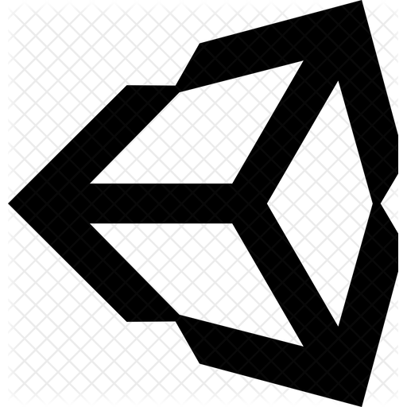
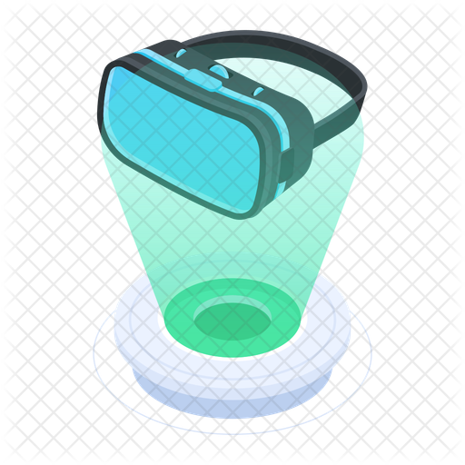
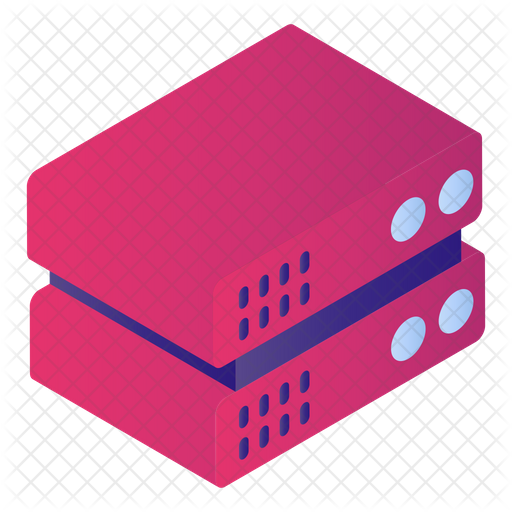

graph LR
%% styling
classDef note stroke:#0f0
subgraph Cloud Project[cloud]
cloudResearch(Research cloud computing, Unity, docker

)
noteOne[[NVIDIA cloudXR, ALVR, Moonlight]]
makeUnity(Make a Unity project with multiplayer features


Make a Unity projects with VR features)
Implement(Run the Unity project in a cloud-like environment)
noteTwo[[Basically, meaning able to introduce artificial network degradation]]
networkTest(Research network degradation on the cloud for user experience)
demoShow(Show the demo of MVP for the 15 Nov Deadline)
feedbackImplement(Implement any feedback given at demo time, and improve the cloud project if needed)
cloudResearch --> makeUnity
cloudResearch --o noteOne
Implement --o noteTwo
makeUnity-- Rapid implementation ---> Implement
Implement-- Fix issues and iterate ---> makeUnity
Implement --> networkTest --> demoShow --> feedbackImplement
noteOne:::note
noteTwo:::note
end
subgraph Haptic Device Integration
setupXR(Setup and research for using the Haptic device in Unity)
userXP(Describe the user experience with the Haptic device)
networkTest2(Gather user experience with regards to artificial network degradation)
MVP(Make an MVP for Haptic device implementation)
setupXR --> userXP
userXP-- Implement Haptic feedback into terrain model --> MVP --> networkTest2
end
networkTest-- Use the network testing on the Haptic device-->networkTest2
deliverable(Deliver the deliverables, all the test data, research and MVP's)
networkTest2 --> deliverable